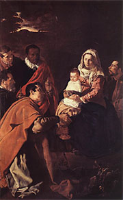
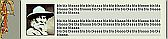
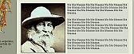
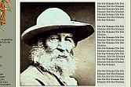

 ...
Beatus vir decía el Rey David; rogaba
y anunciaba su venida
entre los desterrados de la Noche divina.
Hermosa mía, sé luminosa y ciega.
La voz que clama en el desierto
nos ha ordenado los caminos
sobre los frutos amargos de nuestra muerte.
El cielo besa el lirio y la azucena,
y el fruto santo de la Virgen derrama
olores de misterios.
El nos enseñó la alegría eterna
con su voz llena del sentido de las criaturas.
El que elige las vírgenes dichosas de la noche de oro
bajo la estrella de la mañana.
Llega la luz sin noche como quería Santa Teresa.
Al olor de su nombre despiertan las doncellas.
...
Jacobo Fijman (fragmento)
Eramos pocos, y parió la abuela...
"Ofensiva de los jóvenes K para crecer en la UBA".
-
"buscan construir un espacio de poder para llevar
la discusión del proyecto de país y de universidad que
enarbola el Gobierno a las aulas."
Apadrinados por las Madres de Plaza de Mayo, además. Qué bien. (Y eso que ya tenía universidad propia!).
-
...el recuerdo de la generación del '70 que, paradójicamente, creció y se formó con ideas y estilos diferentes a los de las actuales. "Fue la última generación que representó el dar la vida por un ideal"
- ..."enamorarse otra vez de la política y la militancia como no pasaba desde el '83"...
Yo tenía 16 años (el target ideal!)... ("Baila Argentina, baila / baila de sol a sol / Sin militares, sin policías / vamos a vivir mejor")
A ver si ponemos un mínimo de cordura en el ejercicio de la nostalgia, che...
- El grupo cree que podrá hacerse fuerte entre los universitarios independientes, y consideran que podrían crecer en las facultades de Psicología, Economía, Sociales, Medicina y UTN.
Bueno, menos mal; parece que me salvo, por ahora...
-
... En la historia de la humanidad, aparecen de tiempo en tiempo, de manera especial
en épocas muy agitadas, como la nuestra, ciertas cosas. En el mundo antiguo, se las
llamaba herejías. En el mundo moderno, se las llama modas.
A veces, resultan útiles durante cierto tiempo; otras, son completamente dañinas. Pero siempre se conforman gracias a una concentración indebida en torno a una verdad, o una verdad a medias. Así resulta verdad insistir en el conocimiento de Dios, pero es herético insistir en ello como lo hizo Calvino, a costa del amor de Dios; de esa manera, es verdad desear una vida sencilla, pero es una herejía desearla a expensas de los buenos sentimientos y de las buenas conductas.
El hereje (que también es el fanático) no es un hombre que ama demasiado la verdad; nadie puede amar demasiado la verdad. El hereje es un hombre que ama su verdad más que la verdad misma. Prefiere la verdad a medias que él ha descubierto, a la verdad completa que ha encontrado la humanidad. No le gusta ver su pequeña y preciosa paradoja atada con veinte perogrulladas en el paquete de la sabiduría del mundo.
A veces, tales innovaciones tienen una sombría sinceridad, como Tolstoi; otras, una
sensitiva y femenina elocuencia como Nietzsche y, a veces, un admirable humor, ánimo
y espíritu público, como Bernard Shaw. En todos los casos, provocan una pequeña
conmoción y tal vez crean una escuela. Pero siempre se comete el mismo error
fundamental: se supone que el hombre en cuestión ha descubierto una nueva idea.
Pero, en realidad, lo nuevo no es la idea sino la separación de la idea. Es muy
probable que la idea misma se encuentre repartida en todos los grandes libros de un
carácter más clásico e imparcial, desde Homero y Virgilio a Fielding y Dickens.
Se pueden encontrar todas las nuevas ideas en los libros viejos, sólo que allí se las
encontrará equilibradas, en el lugar que les corresponde y a veces con otras ideas
mejores que las contradicen y las superan. Los grandes escritores no dejaban de lado
una moda porque no habían pensado en ello, sino porque habían pensado también en
todas las respuestas.
G. K. Chesterton
El hombre común
La viuda de Demetrio, un articulo breve -periodístico- de Unamuno, entre tantos; livianito pero muy simpático para mi gusto -ironía suave, con toques de ternura. De 1912 (en aquellos tiempos, Chesterton y Unamuno, entre muchos otros, escribían en los diarios; eran otros tiempos).
-
—Cuando ocurrió aquella inesperada desgracia
—me decía—; cuando me vi de repente sin marido, de una
manera trágica y a los dos años escasos de
matrimonio, que fueron una continua luna de miel,
creí morirme. Es más, aun deseé morirme, pedí a Dios
la muerte, con toda la fuerza de mi alma, para ir a
reunirme cuanto antes con mi adorado Demetrio, y si
me dejo llevar del demonio, enemigo de la vida, me
suicido.
—¿Y no se suicidó usted? —la pregunté.
—No, ya lo ve usted.
—Tiene usted razón; ya caigo —respondí.
—No me suicidé, y hasta encontré bien pronto un soberano consuelo a mi aflicción y un motivo de vivir.
—¡Ah, un motivo de vivir! —exclamé—. ¿Y para qué vive usted? ...
[...]
... exclamó la filosófica
viuda, y volviendo su filosófica mirada al retrato de
su difunto marido, debió pensar que éste no había
envejecido, como ella, y que se encontrarían con
cuarenta años de diferencia; miróme luego, revoloteó
una sonrisa agridulce por su boca, a la vez que un
fruncimiento dulciagrio por su ceño, y, al
despedirse, me dijo:
—Vaya, voy a encomendar a Dios a
mi marido.
—Dios le dé salud y larga vida para
encomendarlo —le dije, y me salí.
Si adoptaran la filosofía de esta viuda modelo
todos los viudos y viudas que son, que han sido —esto
de haber sido viudo tiene su misterio— y que serán, y
lo mismo de una persona que de una idea, pronto se
vería que eso que llaman por ahí pesimismo es lo más
divertido que hay.
Sí, ya sé que hay un pseudo-chesterton-blog ... pero no es lo mismo.
Titula Clarín:
- "En el Día mundial contra el aborto, la red es eje de una cruzada a favor de la vida "
Y ya que estamos con nuestros medios:
-
"Suecia reconoce el derecho de adopción a parejas homosexuales "
Por cierto, los lectores, en su inmensa mayoría, están tan bien educados que difícilmente encontrarán diferencias -a nivel conciente, claro está- entre la expresión "reconocer el derecho" y la que hubieran correspondido a una mera información ("legalizar" o "permitir"). Es más: esos mecanismos están tan aceitados , que, tal vez, ni el mismo periodista lo haya advertido...
Estoy leyendo "La geometría fractal de la naturaleza", famoso libro de B. Mandelbrot.
A pesar de que el tema no deja de interesarme, a pesar de que el autor sabe de lo que habla, toda la "onda" del libro me inspira rechazo, una repulsión que me costaría explicar.
Ya que estamos, un poquito de matemática, muy básica en este caso.
La cuestión me surgió armando algún post que debía incluir una imagen. Pretendía yo lograr que el texto que la acompañaba ocupara el espacio al costado, sin sobrar nada; pero con el tamaño original de la imagen, más bien pequeña, el texto no entraba. Empecé entonces a probar aumentando el tamaño de la imagen (escalandola, manteniendo las proporciones ancho/alto, claro está).
|  |  |  |
| 1 | 2 | 3 |
Y, en efecto, agrandando la imagen (figura 2) el espacio
para el texto a la derecha (espacio grisado), aumenta respecto del
original (figura 1). Pero, un momento: ganamos en alto, pero perdemos en ancho; y si seguimos aumentando parece
que el espacio disponible se angosta (figura 3)
hasta desaparecer. Entonces, debería haber un tamaño
de imagen óptimo, que maximiza el area para el texto.
Es así ? Cuál es el tamaño óptimo ?
(Tener en cuenta que el ancho total disponible es fijo,
y que la imagen no tiene por qué ser cuadrada).
La solución (es fácil) abajo.
Una exposición de pintura en el museo Whitney de Nueva York, que incluyó una obra que representa a Jesús resucitado, ha provocado un escándalo. Los artistas y críticos académicos se han pronunciado con severidad contra esta ilustración carente de todo elemento revulsivo, y que se abstiene de ridiculizar o blasfemar contra Jesucristo. Se han formado piquetes en torno a la muestra, con manifestantes que repudian
-
... la ausencia total de detalles obscenos [...]
- "¿Cómo puede ser que [esta tela] no esté mojada con semen de mono ?" -se pregunta la escultora India Jackson, uno de los manifestantes. "Y desafío a cualquiera a que encuentre algún rastro de orina, humana o no, en todo el cuadro. La obra no parece tener el más mínimo rasgo de protesta contra la hegemonía patriarcal del cristianismo. Francamente, no puedo creerlo."
... "Cuando yo veo una pintura de Cristo, se supone que tiene que servir para comentar a mi acompañante: «Sí, es obsceno. Pero sabes que es realmente obsceno? Dos mil años de opresión de hombres de piel blanca en nombre de Dios»".
Otros detractores han denunciado la "ausencia imperdonable
de mensajes subversivos contra el materialismo de nuestra
cultura consumista".
... "En vez de mostrar a Jesús en un trono, no podría al menos
haberlo puesto sobre una pila de reproductores de DVDs ?"
A pesar del clamor general, el director del Museo
se ha negado a retirar la pintura. Aunque, dice,
estaría dispuesto a dialogar con los manifestantes.
"Esperamos llegar a algún acuerdo" -dijo. "Yo no pienso
que sea necesario acceder a los pedidos de repasar la tela con sangre menstrual de una adolescente, pero estoy abierto a todas
las sugerencias. Quizás podamos arreglar la situación con algunos
vómitos de rinoceronte. ... Personalmente, yo dejaría la pintura como
está, pero si algún toque impactante es necesario para calmar a la
gente, pueden contar conmigo".
Me gustó también esta, sobre las encuestas de opinión:
- "According to a Gallup public-opinion opinion poll released Monday, a solid 85 percent of the American people strongly believe that the American people no longer strongly believe that Bush is performing effectively as president. "
- "I'm not surprised," said Barry Amodale, a Plano, TX, systems analyst. "I had a feeling that Americans were feeling that way. I heard that the voters were wondering how the average citizen thought Bush would explain his $87 billion request to the taxpayers, too."
- Amodale's opinion seems to reflect a recent rise in the popular regard of general opinion.
- "Until last week, I didn't know that people had such strong opinions about public opinion about Bush," said Greg Simon, a Chicago-area realtor. "I may have to reconsider my feelings about the president. I wouldn't want people to think that I don't think that what they think is important."
Muy bueno. Y la imagen de Bush, con el perrito, y el caption me ha hecho reír de una manera desproporcionada.
Del neocon Weigel, citado con aprobación por Mark Shea:
-
... Wright's argument is that the only historically satisfactory explanation of the rise of the early Church and the only satisfactory reading of the relevant texts (Paul's references to the Resurrection in his letters and the four Gospel accounts) lead to the conclusion that "Jesus was bodily raised from the dead." As Dr. Wright puts it, briskly, "...the only possible reason why early Christianity began and took the shape it did is that the tomb really was empty and that people really did meet Jesus alive again." Yes, Wright continues, this involves "accepting a challenge" to the way we usually think about the world and the way it works. But if we're willing to think outside-the-box of conventional modern world views, "the best historical explanation for all these phenomena is that Jesus was indeed bodily raised from the dead."
In other words, N.T. Wright uses the skills of historical-critical scholarship precisely to affirm the historicity of "the resurrection of the Son of God." A more thoroughgoing demolition of the trendy scholarship and pseudo-scholarship underneath The DaVinci Code could not be imagined.
A desarrollar en otro momento, acaso.
La señora Glass (Bessie), madre de los siete hermanos prodigio, empezando por Seymour (que se ha suicidado hace varios años) y terminando por Zooey y Franny, habla con el primero sobre la crisis nerviosa —con ribetes místicos— que está pasando la segunda; en el baño.
-
... la señora Glass dio un innecesario tirón a su
redecilla, luego sacó los cigarrillos y las cerillas, pero
únicamente los sostuvo en la mano.
—Para tu información —dijo—, yo no dije que fuera a llamar al psicoanalista de Philly Byrnes, sólo dije que estaba pensando en hacerlo. En primer lugar, no se trata de un psicoanalista cualquiera. Da la casualidad de que es un psicoanalista católico y muy devoto, y pensé que podría ser mejor eso que quedarse sentado y ver cómo esa niña...
—Bessie, te lo advierto, maldita sea. Me da lo mismo que sea un veterinario budista muy devoto. Si llamas a algún...
—No es preciso ponerse sarcástico, jovencito. Conozco a Philly Byrnes desde que era un niño pequeño. Tu padre y yo actuamos con sus padres en el mismo programa durante años. Y sé seguro que ir al psicoanalista ha convertido a ese muchacho en una persona absolutamente nueva y encantadora. Estuve hablando con su...
Zooey dejó el peine dentro del botiquín con un golpe seco, luego cerró la puerta del armarito con un gesto de impaciencia.
—¡Qué estúpida eres, Bessie! —dijo—. Philly Byrnes. Philly Byrnes es un pobre hombre, impotente, sudoroso y cuarentón, que ha dormido durante años con un rosario y un número de Variety debajo de la almohada. Estamos hablando de dos cosas tan distintas como el día y la noche. Ahora...escúchame, Bessie —Zooey se volvió para mirar de frente a su madre y la examinó cuidadosamente, con la palma de la mano sobre el lavabo, como buscando apoyo—. ¿Me escuchas?
La señora Glass terminó de encender otro pitillo antes de comprometerse. Luego, exhalando el humo y sacudiendo imaginarias briznas de tabaco de su regazo, contestó sombríamente:
—Te escucho.
—De acuerdo. Ahora te estoy hablando muy en serio. Si tú... Escúchame bien. Si no quieres, o no puedes, pensar en Seymour, sigue adelante y llama a algún psicoanalista ignorante. Hazlo. Llama a algún analista experto en adaptar a la gente a los placeres de la televisión, de la revista Life todos los miércoles, de los viajes a Europa, de la bomba H, de las elecciones presidenciales, de la portada del Times, de las responsabilidades de la Asociación de Padres y Profesores de Westport y Oyster Bay, y Dios sabe qué otras cosas gloriosamente normales..., hazlo, y te juro que, en menos de un año, Franny estará en un manicomio o vagando por un maldito desierto con una cruz ardiente en las manos.
La señora Glass sacudió más briznas de tabaco imaginarias.
—Está bien, está bien. No te alteres tanto —dijo—. Por Dios santo, nadie ha llamado a nadie.
Zooey abrió bruscamente la puerta del armarito, contempló el interior, sacó una lima de uñas y cerró la puerta. Tomó el cigarrillo que había puesto en el borde del estante de cristal y le dio una chupada, pero estaba apagado.
—Toma— dijo su madre y le tendió su paquete de extra largos y su carterita de fósforos.
Zooey tomó un cigarrillo del paquete y llegó a ponérselo entre los labios y a encender un fósforo, pero la presión de sus pensamientos le impidió ir más allá; apagó la cerilla y se quitó el pitillo de la boca. Sacudió la cabeza con impaciencia.
—No sé —dijo—. Me parece que debe de haber un psicoanalista
escondido en alguna parte que podría ayudar a Franny..., lo
pensé anoche —hizo una ligera mueca—. Pero yo no conozco a
ninguno. Para que un psicoanalista le sirviera de algo a Franny,
tendría que ser un tipo muy especial. No sé. Tendría que creer
que si tuvo la inspiración de estudiar psicoanálisis fue por
la gracia de Dios. Tendría que creer que si no le atropelló un
maldito camión antes de que obtuviera su licencia para
ejercer, fue por la gracia de Dios. Tendría que creer que si
posee la inteligencia natural que le permite ayudar en algo a
sus malditos pacientes es por la gracia de Dios.
No conozco a
ningún buen analista que piense nada parecido. Pero ése es el
único tipo de psicoanalista que podría servirle a Franny. Si
da con alguien terriblemente freudiano, o terriblemente
ecléctico, o sólo terriblemente mediocre, alguien que ni
siquiera sienta una absurda y misteriosa gratitud por poseer
intuición e inteligencia..., saldrá del análisis en peor
estado que Seymour. Me preocupa horrores pensar en eso...
J. D. Salinger
Franny & Zooey
Es hoy la fiesta de Nuestra Señora del Rosario.
Debería escribir algo, tal vez...
Pero mejor pongo un link a un texto que copió Gerard, y me voy a rezar un rosario.
Varias cosas en los blogs yanquis. Este post de Mark Shea (Mark es uno de los "conservadores" más lucidos y críticos respecto de la guerra contra Irak) desató una serie de comentarios jugosos. Por ejemplo, esta indignación(tan autoindulgente, tan típica!) de Rod Dreher:
-
Acaso el Cardenal Laghi no cree que la guerra contra el terror
es el Bien contra el Mal ? Si es así, doy gracias a Dios
que tenemos un G. W. Bush protestante evangélico
dirigiendo nuestro país, y no un cardenal italiano-mundano.
No es necesario creer que nuesta nación es pura
(claro está que no lo es) para reconocer que,
en comparación con los islámicos fundamentalistas,
nosotros somos los buenos. Si el cardenal
no puede verlo, eso me dice más sobre el cardenal
que sobre los Estados Unidos.
-
En realidad el cardenal se estaba refiriendo a la guerra
contra Irak, no a la guerra contra el terror.
Y cuando uno mira la cultura de EEUU, puede llegar a decir
con bastante fundamento que esta guerra se parece mucho
más a la guerra entre Roma y Cartago que a la guerra
escatológica de los hijos de la luz contra los hijos de la oscuridad.
-
"Prehistoric: Chilean Catholic Church Campaigns Against Divorce"
Opinion polls indicate that 70 percent of Chileans favor legalizing divorce. However, mistreating the people's will, these prehistoric forces insist in fighting against modernity.
...
In the name of human rights and family values (of the Middle Age), they are also demanding that couples be allowed to choose marriage with a "no divorce" option.
...
Welcome to the new century Mr. Angelini. The world has changed since Inquisition: read some Bacon, Descartes and get noticed about the French Revolution. Or at least, catch up the United Kingdom, where the Court for Divorce and Matrimonial Causes took over the jurisdiction for matrimonial affairs from the Church in 1858.
... es graciosa, esa demostración de las estadísticas. Me daban ganas de sugerirle al autor que se peque una vuelta por mi progresista Argentina (y ahora con Zaffaroni!) y vea.
Pero me embromó: resulta que el autor, un muchacho de 25 años que escribe en una publicación (cuyo nombre significa "Verdad", por otro lado)
Qué orgullo para la familia!
Otro cráneo lleno de los materiales de consumo de humanidades de la UBA (Ciencias de la Comunicación, o algo así); aunque hay que decir que éste parece tener una onda un poco demasiado soviética para ese ambiente, más bien francés... o nor-europeo... Y demasiado poco sentido del ridículo.
Una definición, de diccionario, del Ateísmo:
-
"Sistema de ideas que niega la fe en lo sobrenatural [...]
El objeto del ateísmo es explicar las fuentes y causas del origen y existencia de la religión, criticar las creencias religiosas desde el punto de vista de la visión científica del mundo, aclarar el papel social de la religión, señalar de qué manera pueden superarse los prejuicios religiosos. La aparición y progreso del ateísmo están unidos al avance de los conocimientos científicos.[...]
La experiencia de la U.R.S.S., donde el ateísmo ha adquirido un carácter de masas, constituye una confirmación práctica de que estos principios son justos. Al construirse el comunismo, se va formando un nuevo hombre, libre de supervivencias religiosas y de otro tipo, un hombre armado con una concepción atea y científica del mundo. "
Por ese entonces, del otro lado del mundo, empezaban a tocar los Rolling Stones, Tolkien seguía disculpándose ante sus editores por no terminar el Silmarillion de una buena vez, Salinger publicaba "A perfect day for Banana-fish", mi papá conocía a mi mamá, Pablo VI (con el concilio empezado) sucedía a Juan XXIII y nombraba a Karol Wojtyla arzobispo de Cracovia -comunista.
Y tiene razón, en parte, el diccionario: lo de la URSS en verdad es una confirmación práctica.
-
A .—Distraídos en razonar la inmortalidad, habíamos dejado que anocheciera sin encender la lámpara. No nos veíamos las caras. Con una indiferencia y una dulzura más convincentes que el fervor, la voz de Macedonio Fernández repetía que el alma es inmortal. Me aseguraba que la muerte del cuerpo es del todo insignificante y que morirse tiene que ser el hecho más nulo que puede sucederle a un hombre. Yo jugaba con la navaja de Macedonio; la abría y la cerraba. Un acordeón vecino despachaba infinitamente la Cumparsita, esa pamplina consternada que les gusta a muchas personas, porque les mintieron que es vieja... Yo le propuse a Macedonio que nos suicidáramos, para discutir sin estorbo.
Z (burlón).—Pero sospecho que al final no se resolvieron
A (ya en plena mística)—Francamente no recuerdo si esa noche nos suicidamos.
Jorge Luis Borges
"Diálogo sobre un diálogo" - de "El hacedor"
Según creo, no es de los textos más conocidos de Borges; y probablemente no sea de lo mejor. Tiene a mi ver una especie de bajo vuelo -al menos en primera lectura, ya saldrán los críticos y estudiosos con interpretaciones más o menos esotéricas- que, según el clima, me resulta fastidiosamente vacío o agradablemente humilde (humor que recuerda a cositas de Dolina...).
No sé que les parecerá a uds, pero a mí la aclaración última ("ya en plena mística") me parece francamente tonta; no era nada necesaria y estropea un poco el remate.
Y por cierto la "tesis" de Macedonio es una bobada, y -aunque esto ya no va a interesar a nadie- lejísimo del cristianismo: el alma será todo lo "inmortal" que quieras , pero el hombre es mortal; y la muerte (que no es "del cuerpo" sino del hombre) es algo tan real y tan terrible, está tan lejos de ser algo nulo, que hizo llorar al mismo Cristo.
Pero no nos metamos en teologías. Lo que quería hacer notar es esto:
Por un lado, el texto es uno de los elementos que han abonanado
el mito de la renombrada (y nunca comprobada)
sabiduría de Macedonio Fernández.
Por otro lado, es una de las muchas ocasiones en que Borges
hace ostentación de un desprecio bastante pueril -compadradas,
por decirlo como se debe- hacia las devociones populares
(tango, Gardel, fútbol, peronismo); pose cínica,
propicia al escándalo leve y a la notoriedad en los medios,
de "Refutador de leyendas" , como diría el mismo Dolina (en las antípodas en este aspecto). Ahora bien,
resulta que, en este caso al menos, se trata de un
cinismo descaminado: la Cumparsita
no será el mejor tango que se haya escrito, y estará demasiado
desgastado por el uso; pero, al fin y al cabo, es un tango sencillo y digno
(basta escucharlo en versión de Salgán y De Lío, por ejemplo);
y suponer que su fama se debe a una falsa pretensión de
antigüedad, es una gansada.
Resumiendo: mientras Borges nos ofrece una refutación dudosa de una
leyenda verdadera (la calidad de "la Cumparsita"),
alimenta al pasar una leyenda falsa (la sabiduría de Macedonio).
Mala puntería, diríamos... si estuviéramos seguros de que está
hablando en serio.
Y yendo a la gracia mínima del diálogo, basada en la imposible conjugación en primera persona y tiempo pasado del verbo "suicidarse", recuerdo un diálogo de Unamuno, que roza el mismo motivo, pero en tono más casual y menos literario (es un artículo periodístico, no es una página de "El hacedor"... viste) y, tal vez, con más gracia y más sustancia... Queda para otro día.
PS: Y no, no me disgusta Borges. Ni tampoco ese diálogo. Y la puesta en escena está muy bien... me gusta el detalle de la navaja, y el del acordeón molesto (acordeón ? no será bandoneón, no?). Y sobre todo eso de "indiferencia y dulzura más convincentes que el fervor".
Y ya que lo mentábamos hace poco: Una ponencia de Ratzinger, en el sitio del Vaticano, recapitulando la evolución de la exégesis bíblica durante el siglo XX dentro del catolicismo; cuánto y cómo fue aumentando la "libertad" para interpretar las Escrituras.
Interesante.
Ahora, hablando de progresos y evoluciones ... estaría lindo
que los diseñadores del sitio web del Vaticano
se aggiornaran un poquito. Ya hace varios años que
todos aprendimos a odiar profundamente
esas texturas de fondo en las
páginas con texto. Poco legible y poco elegante.
(Encima está hecho con el Frontpage!
Qué cuernos hace el guardián de la ortodoxia que deja
pasar esta herejía ?)
Tomás Moro: "Un santo que criticó a los obispos de su tiempo".
Francia, 22 de agosto de 1906, santuario de la Virgen de La Salette:
-
... Farsa singular. Un capellán ordena desde el púlpito
a todos los peregrinos prometerse solemnemente
la abstinencia, la oración de la mañana
y de la noche, la santificación del domingo y el
respeto del nombre de Dios.
Esta promesa debe hacerse levantando la mano, como ante un juez:
- Peregrinos ¿lo prometéis?
Todos mugen:
- Sí, prometo.
La vergüenza me paraliza.
Del Diario de Leon Bloy (cuarto tomo: "El invendible")
Un siglo después:
Argentina, 6 de octubre de 2003, santuario de la Virgen de Luján.
Misa en la plaza para los peregrinos, tirados sobre el piso. Onda "buen día" /"la paz está con ustedes"; se cantan engendros como este. Sermón acorde, previsible. Y aún así, me faltó pesimismo para prever un remate tan creativo:
-
_ ... (bla bla bla bla bla) ... y por eso, para reafirmar
(bla bla bla)... les propongo que cada uno de nosotros
ponga su mano sobre el hombro de la persona
que tenga al lado, y juntos digamos: "Queremos cuidarnos como hermanos".
Yo, la verdad, hubiera preferido poner la mano sobre la boca del cura...